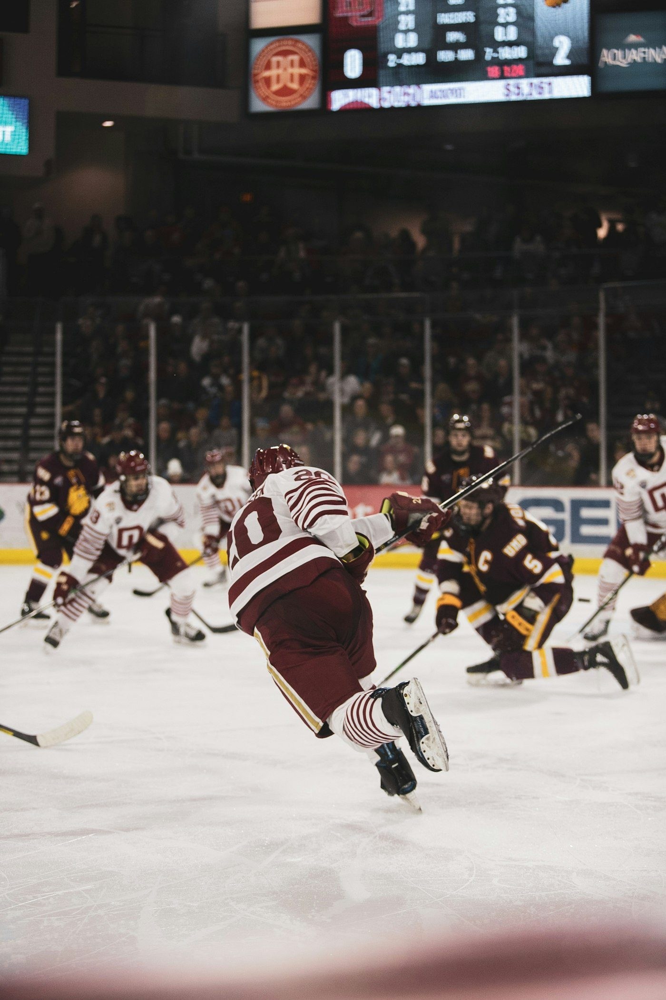
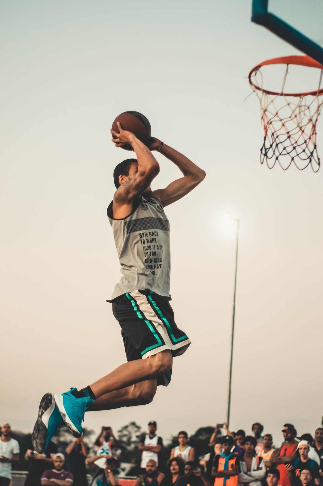
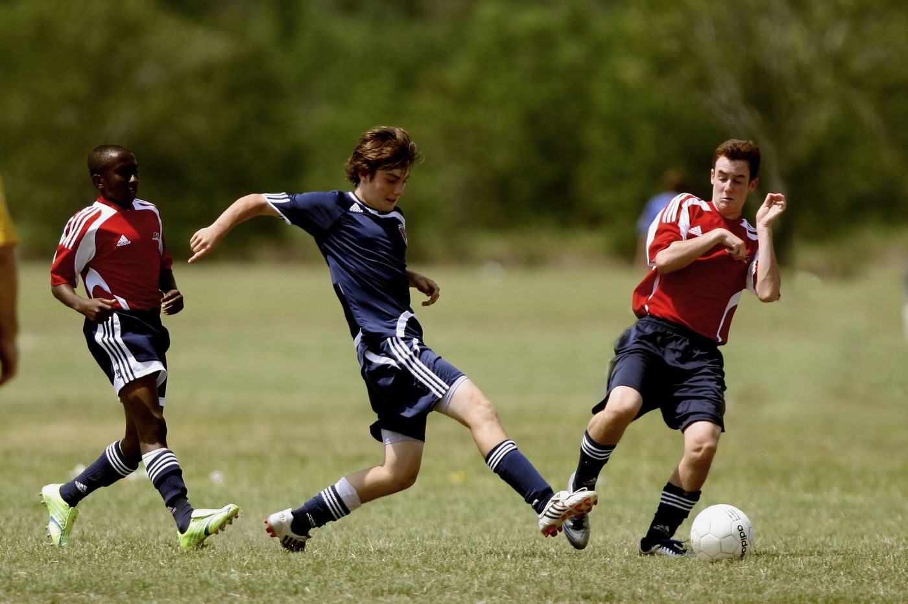
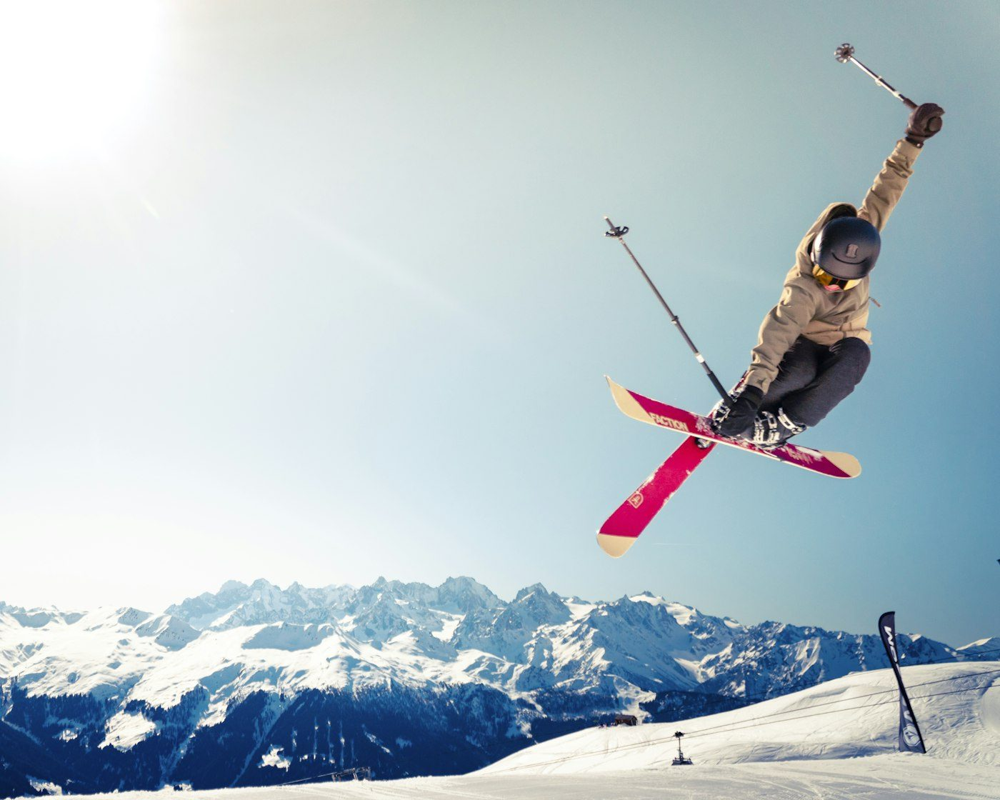

Sports Poster & Art Direction Series
Motion defines the moment. A self-initiated graphic-design project where athletic movement determines how the design behaves.
02 — Concept
Every sport contains a fraction of a second that defines the action. VELOCITY builds a shared campaign language around those decisive instants — without generic futurism or neon noise.
03 — Motion Language
Direction dictates composition. Vertical movement creates vertical compositions. Acceleration stretches information horizontally. Impact compresses imagery and typography. Suspension creates negative space. Release creates separation and trajectory.
04 — Collection
Hockey RELEASE · Basketball RISE · Running DRIVE · Soccer STRIKE · Tennis IMPACT · Snowboarding AIR




05 — Intensity
Most of VELOCITY stays disciplined. Then one or two campaign pieces go deliberately aggressive — oversized type exiting the frame, layered statistics, motion blur, coaching marks, and hard crops through letterforms.
Sprint as visual overload. Scoreboard numerals + handwritten coaching note.
Halftone pressure and overlapping data at the contact point.
06 — Applications
Concept word enlarges. Secondary data drops.
Athlete card logic at pocket scale.
Numerals lead. Photo becomes texture.
One word + number. No photo.
VELOCITY is a self-initiated fictional graphic-design project created to demonstrate sports art direction, typography, Photoshop compositing, Illustrator graphics, and campaign design — where athletic movement determines how the design behaves.